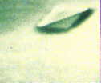

Le Bureau Défense-Opérations de la Direction Générale de la Gendarmerie Nationale diffuse une note
mettant en garde ses brigades contre les agissements d'associations ufologiques susceptibles de violer la
confidentialité des Procès-Verbaux liés aux observations d'ovnis Sardet (général): Note-Express n° 20250, 3 août 1993.
À Château Gontier (Mayenne), 3 témoins sortant d'une discothèque
observent 1 point très lumineux dans le ciel. La forme est imprécise selon les témoins (ronde ou triangulaire)
mais stationnaire dans le ciel. Le point lumineux pâlit progressivement avec le lever du jour pour disparaître
Les témoins ont probablement observé un astre très brillantSEPRA: PAN classé B.
A Remilly (Moselle), 1 témoin au volant de sa voiture observe
pendant 1 mn environ une grande lumière blanche très intense stationnaire. À la disparition de la lumière, un
sifflement est entendu et 1 forme noire semble disparaître à très grande vitesse. Le lendemain, le témoin
ressentira des douleurs musculaires et revenant sur les lieux il est pris de violents maux de tête à l'endroit
de l'observation L'enquête a montré qu'il n'y avait pas de trafic aérien dans la zone et le phénomène reste inexpliquéSEPRA: PAN classé D.
A Eummemering Creek (Australie), Kelly Cahill observe
un ovni en forme de disque, de taille impressionnante et muni de hublots circulaires. Il émet une sorte de grand
rayon vertical.
A L'Hopital (Moselle), des témoins voient pendant 30 s une
lueur de forme sphérique et de la taille d'une montgolfière. Le phénomène disparaît rapidement avec un
sifflement aigu SEPRA: PAN classé C.
À Vigy (Moselle) 1 témoin au volant de sa voiture observe 1
grosse boule lumineuse stationnaire dans le ciel. Cette boule est jaune étincelante, tournant sur elle-même en
silence et plus grosse qu'une étoile. La forme ressemble à un disque surmonté d'un dôme ou une forme de champignon
renversé. De retour chez lui, le témoin demande à sa mère d'observer le phénomène. Elle le décrira dans les
mêmes termes que son fils. L'observation a duré 20 mn environ puis le phénomène a disparu Il ne semble pas que cette observation puisse être rapporochée de "la nuit des étoiles filantes" ce même soir qui était très médiatiséeSEPRA: PAN classé D.
Au Faou (Finistère), 1 témoin observe de chez lui 1 objet de
forme triangulaire stationnaire. L'observation ne dure que quelques mn et a disparu lorsque le témoin revient avec
son camescope pour tenter de le filmer Aucune manifestation aérienne n'a eu lieu à cet endroit ce jour-là et aucune autre information n'a pu être recueillieSEPRA: PAN classé C.
À Saint Gaudens (Haute-Garonne) 3 témoins observent durant 10 à
15 mn 1 point rouge très intense. Observé à la jumelle, ce phénomène est de forme ovoïde et à l'intérieur, on peut
distinguer plusieurs feux rouge orangé ainsi que 3 faisceaux lumineux. Compte tenu de la distance estimée et de la
netteté de l'observation, le phénomène semblait de grandes dimensions SEPRA: PAN classé D.
L'ovni filmé le 15 à Sébastopol

À Sébastopol (Ukraine) un témoin filme un point lumineux clignotant, qui
se transforme lentement en soucoupe grise-argentée (photo ci-contre).
À Vatan (Indre) 2 témoins observent 2 lumières blanches et des
feux rouges clignotants qui se déplacent lentement sans bruit audible L'enquête montrera rapidement que ce soir-là un avion militaire DC-8 venant d'Angleterre cherchait la piste d'atterrissage et a effectué de larges crochets dans la zone concernée. Les phares observés et les feux correspondent à la signalisation de l'avionSEPRA: PAN classé A.
À Montgiscard (Haute Garonne) 1 témoin observe 1 phénomène
lumineux elliptique délimité par plusieurs sources lumineuses et se déplaçant lentement et silencieusement dans le
ciel SEPRA: PAN classé C.
À Saint Mamert-du-Gard (Gard) les gendarmes reçoivent plusieurs
appels faisant état d'un bruit très fort et anormal, d'une lueur et d'un déflagration L'enquête sur le terrain ne donnera rien, mais il semble bien qu'il s'agisse du passage d'un avion à basse altitudeSEPRA: PAN classé B.
À Saint Peray (Ardèche) 1 témoin sur sa terrasse observe 1 objet
lumineux très haut dans le ciel avec 3 lumières blanches. L'observation dure environ 1 mn, aucun bruit n'est
détecté SEPRA: PAN classé C.
À Vif (Isère) 2 témoins observent des points lumineux de
différentes couleurs dans le ciel très clair et évoluant très lentement L'observation, comme l'a précisé un témoin était vraisemblablement celle de parapentistes en évolutionSEPRA: PAN classé B.
La sonde Galileo découvre le satellite de l'astéroïde Ida. Il est baptisé Dactyl.
À Biarritz (Pyrénées-Atlantiques) 1 vacancier observe en se
promenant le long de l'océan une forme phosphorescente ovoïde sortant de la mer, restant quelques instants
stationnaire et disparaissant aussitôt SEPRA: PAN classé D.